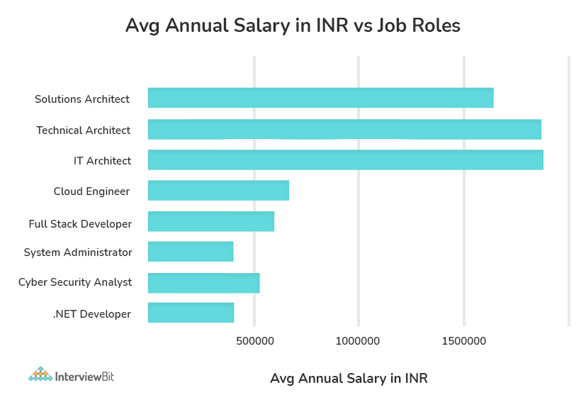
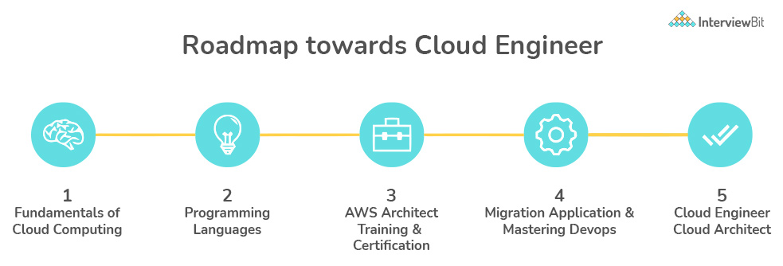

Since the market is booming in cloud technology and most companies are migrating their business to the cloud, there is great demand for cloud engineers and their related roles. By 2022 there will be a huge demand for such kinds of jobs and one can get a good pay scale according to their work experience in the field.
The salary of a cloud engineer depends on various factors like skills or profile, experience, and company. Below we are going to discuss each of factors separately. 
Experience plays a major role in deciding one’s salary structure. As you climb the ladder of knowledge in a cloud career, the pay structure gets better according to that. The more you learn, the more you earn.
Beginners: An entry-level cloud engineer with 1-2 years of experience in India has an average annual salary of around Rs 5,40,000 p.a.
Mid-Senior: Engineers at this level have experience of 5-8 years. Their approximate salary in India is Rs 10,00,000 p.a.
Expert: Engineers at this level have experience of 10-15 years. Their approximate salary in India is Rs 21,00,000 p.a.
Cloud Engineering is a field that is evolving at a great pace. Any particular path or steps are not there to be an expert in any kind of field, it’s mere hard work, dedication, and interest to learn something new and remain updated.
The career Path of a cloud engineer is mentioned below:

1. Learn Software concepts
2. Gain knowledge in cloud concepts like basics, deployment models, clustering, serverless cloud model, CI/DI, virtualization, etc.
3. Gain knowledge of cloud tools like VMware, dockers, Jenkins, etc.
4. Get certified in any of the cloud platforms like AWS, Google Cloud, Azure
5. At last, apply for jobs and gain experience.